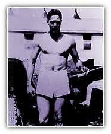
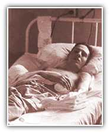

 "I Thought My Arms Were Missing"
That's when the Germans saw him. Seconds later, an exploding shell ripped into his right shoulder - shattering his collarbone, smashing part of his spine and leaving his arm dangling. "I lay face down in the dirt," Bob Dole said. "I could not see or move my arms. I thought they were missing."
After the battle, one of his men gave him a shot of morphine and marked his forehead with an "M" written in his own blood. Another shot of morphine would have killed him. But no one really thought it mattered: Doctors said he wouldn't make it anyway.
Courage:
On the Road to Recovery
He was paralyzed from the neck down. They sent him to a nearby military hospital and put him in a full-body cast. After a few days, the Army shipped him to Kansas - so he could die near his home. But Bob Dole was never one to give up. And he did not give up then. Slowly, with agonizing effort, sensation came back to his legs and left arm.
Then he caught a fever that just would not go away. 108.7 degrees. His mom told the rest of the family that Bob would not make it through the night. They called a chaplain. Doctors made a last ditch attempt: A kidney operation and a shot of penicillin. He rebounded and his long and hard journey to recovery had begun.
Previous Page | 1 | 2 | 3 | 4 | 5 | 6 | 7 | 8 | 9 | Next Page

More opportunities. Smaller government. Stronger and safer families
Homepage | Register | Volunteers | Donations
About the Team | Dole Interactive | Newsroom | The Dole Agenda | On the Campaign Trail | Get Involved
Originally Paid for by Dole Kemp '96 Campaign Committee
Original Web Design by Presage Internet Campaigns
To Learn more about Bob Dole, Please Visit the Dole Institute
This Web Site is Presented for Educational Purposes by 4President.org